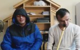

Bu Hafta En Çok İzlenen Dini Videolar
-

Abdulbasit Abdussamed - Yasin Suresi
253 izlenme 4 gün önce -
Veysel Karani - İlahi
239 izlenme 5 gün önce -
Selman Çevik
130 izlenme 3 gün önce -
Cübbeli Ahmet Hoca - İhlas Suresi Okumanın Fâzileti
129 izlenme 2 gün önce
-
Kıl Tapınıcısı Cübbeli'den Sakal Hikayeleri
107 izlenme 5 gün önce -
Cübbeli Ahmet Hoca - Subhanallahi Velhamdulillahi Ve La İlahe İlallahu Vallahu Ekber 02.10.14
86 izlenme 4 gün önce -
Kabe İmamı Sudeys'den Ağlatan Filistin Ve Şam Duası
72 izlenme 4 gün önce -
Cübbeli Ahmet Hoca - Hz. Ömer (R.a.): ''Namazı Terkedenin Dini İmanı Yoktur!''
66 izlenme 7 gün önce -

Kabe İmamı Mahir Kur'an-ı Kerim Fatiha Suresi
59 izlenme 4 gün önce -
Abdurrahman Önül - Fırat Akmıyor
57 izlenme 6 gün önce -
Cübbeli Ahmet Hoca - Subhanallahi Ve Bihamdihi
53 izlenme 4 gün önce -
Cübbeli Ahmet Hoca - Download Arşivcilere Önemli Çağrı
52 izlenme 7 gün önce -
Cübbeli Ahmet Hoca - Haktan Susan Dilsiz Şeytandır
49 izlenme 3 gün önce -
Gökhan Öztürk - Nerdesin
47 izlenme 3 gün önce -
İbrahim Saraçoğlu ile Ruh ve Beden Sağlığı - 26.10.2014 - TRT DİYANET
46 izlenme 5 gün önce -
Selman Çevik - Sıkısarıl Sünnetine İlahisi
46 izlenme 3 gün önce -

Cürmüm İle Geldim Sana
45 izlenme 1 gün önce -
Cübbeli Ahmet Hoca - Hz. Ömer (R.A.): ''Namazı Terkedenin Dini İmanı Yoktur!''
42 izlenme 7 gün önce -
La İlahe İllallah - Zikir
42 izlenme 5 gün önce -

İbrahim Türkses - Cürmüm İle Geldim Sana
40 izlenme 3 gün önce